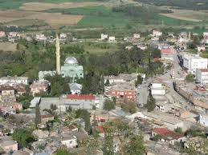
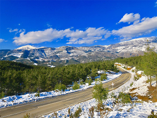

karaisalının yükselen sesi


NEDEN MURTCU'YUZ?
ADANA'nın işgali sırasında şehre murtçu kılığında girip, düşmana karşı istihbarat faaliyeti yürüten KARAİSALI halkına verilen yerel lakap. Murtcu'luk geçmişinde fedakârlık ve kahramanlık barındırıyor olmaktır!Daha >>>

KÖKENLERİMİZ?
1481-1496 yılları Mısır Memlük Sultanı Kayt'ın bölgede hakim olduğu bilinmektedir. Yavuz Sultan Selim'in Mısır Memlüklerini yendiğinden sonra bölge yeniden Ramazanoğullarına teslim edilmiş. Çeceli yani bugünkü Karaisalı Karaisa aşiretine verilmiştir. Bu devirde burada daha başka göçebe aşiretleri de vardı. Bunların başlıcaları Farsal, Bozdoğan, Kusan, Gündüz, Kuşdemir, Özer, Sarıkeçili ve Karakeçilidir.Daha >>>